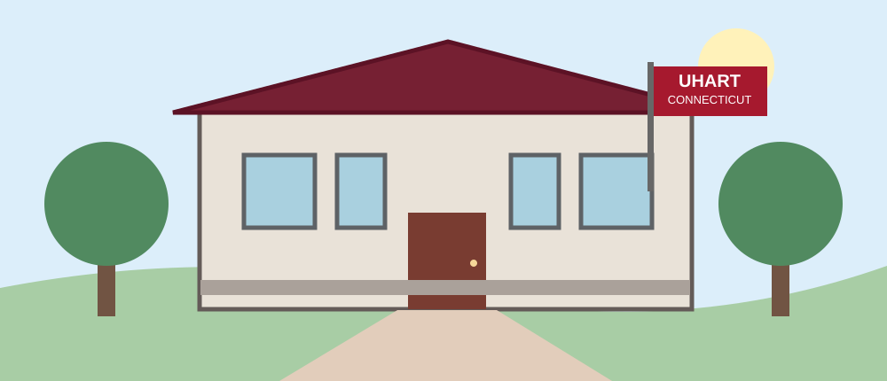

This page is about the University of Hartford, its programs, and what students can find on campus.
The University of Hartford is a private university in Connecticut. The main campus is in West Hartford, close to the city of Hartford. The university was formed in 1957 when three schools joined together. These schools were Hillyer College, Hartford Art School, and The Hartt School.
Today the university has different areas of study. Students can choose subjects connected to science, business, art, and other fields. This is useful because students with different interests can study at the same university.

The picture is an illustration of a campus, not a real photograph of the university.
At the University of Hartford, students can study many subjects. Some programs are more focused on technology, while others are about music or art. The classes and work can be different depending on the program a student chooses.
Some areas of study are:
The table below shows three examples of schools at the university and what students can study there.
| School | Subject Area | Example Program |
|---|---|---|
| Barney School of Business | Business | Accounting |
| College of Engineering, Technology, and Architecture | Engineering | Mechanical Engineering |
| The Hartt School | Performing Arts | Music |
More information about these schools is on the university's academic website.
The campus has buildings for classes, a library, and places where students can eat or spend time together. There are also outdoor areas around the buildings. Students can go to their classes and use these places during the day.
For someone who is visiting the university, these are a few things they can do:
I think visiting a campus can help students understand what the university is like. But it is also important to read about the programs before choosing where to study.
More information can be found on the official University of Hartford website.